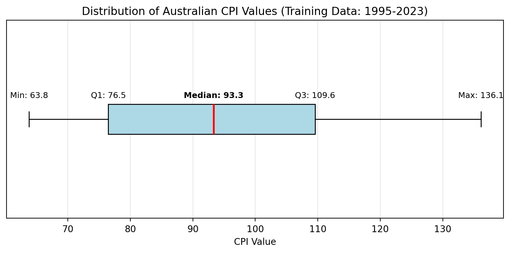
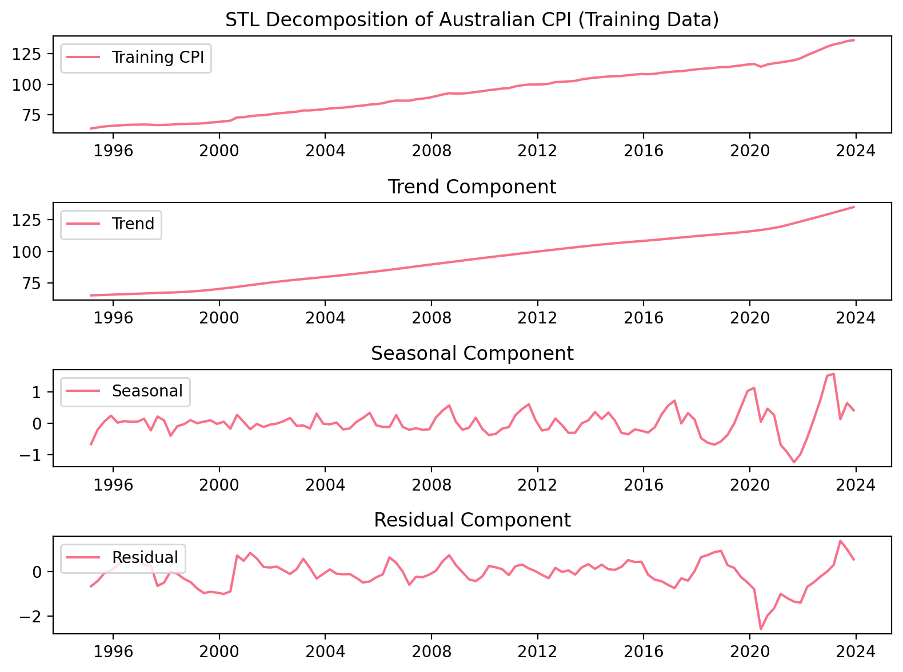
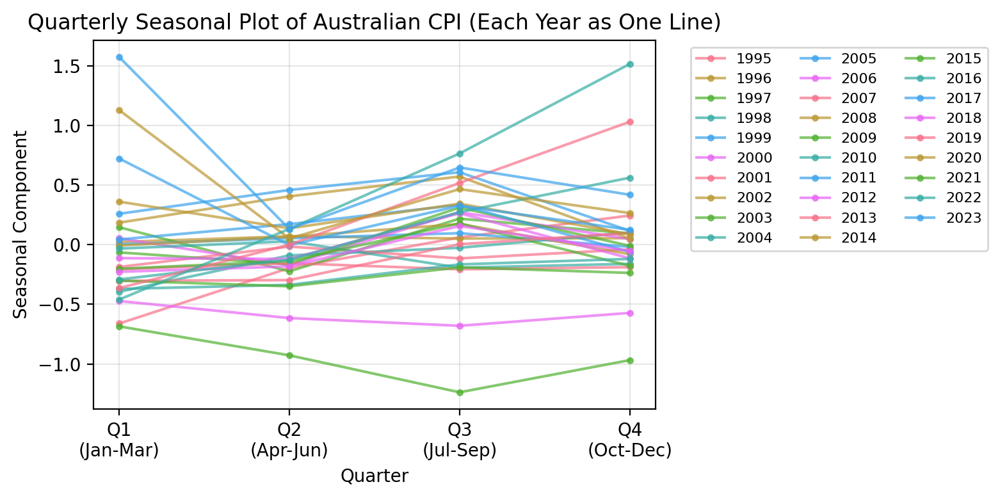
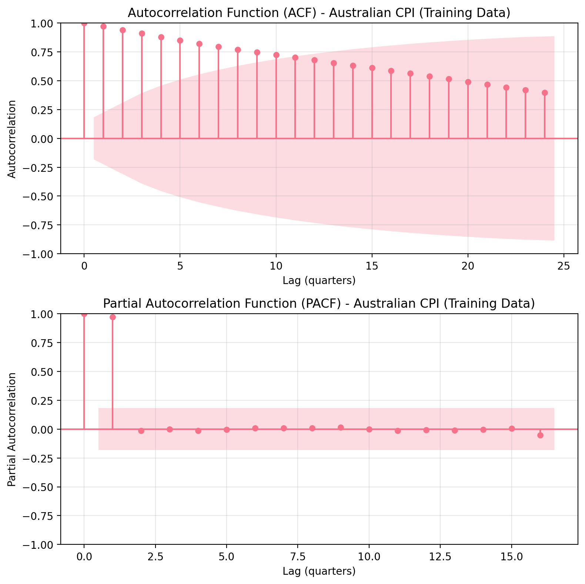
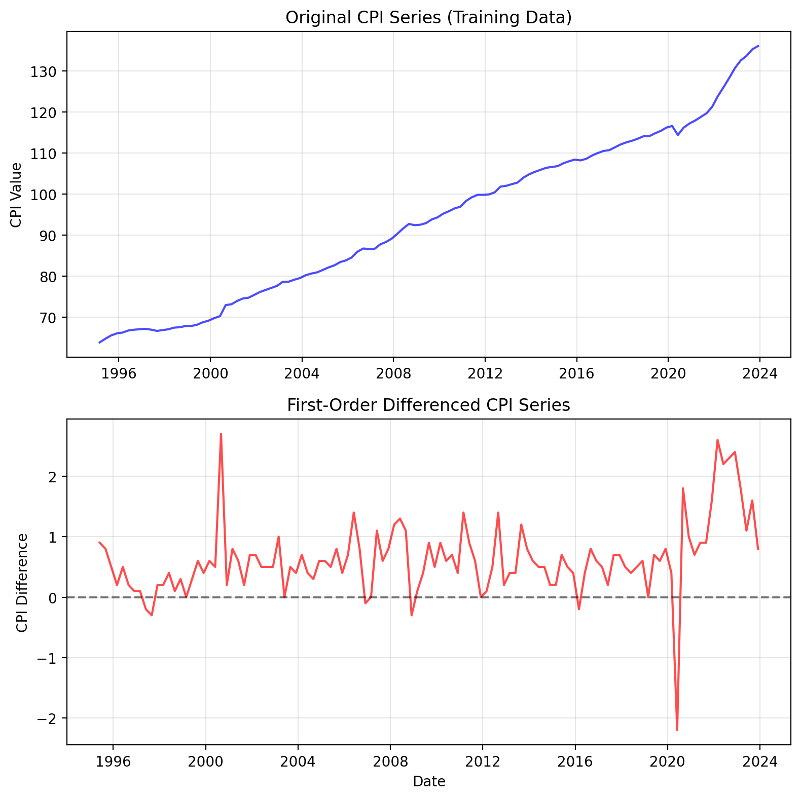
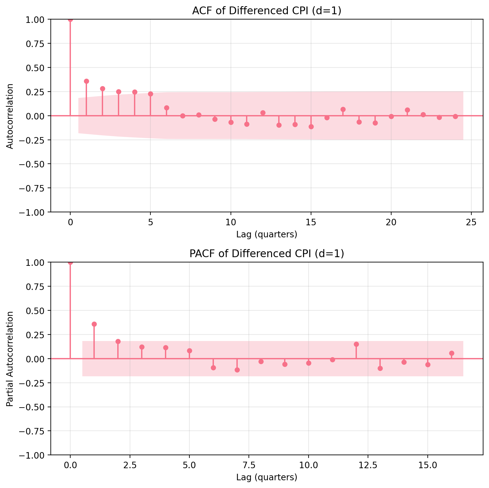
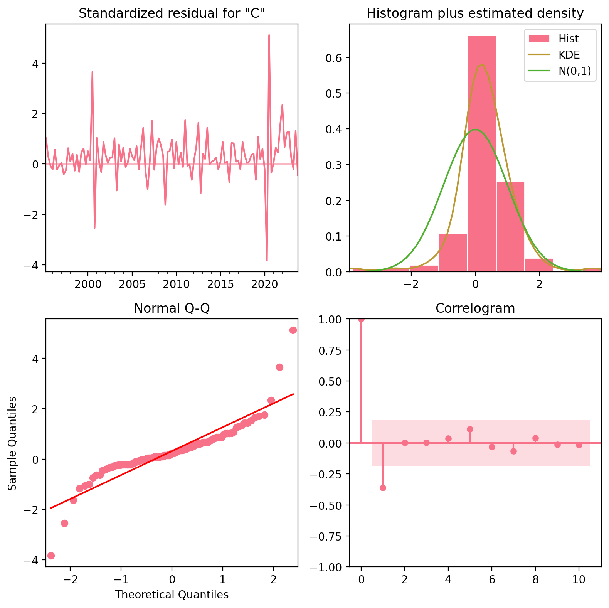
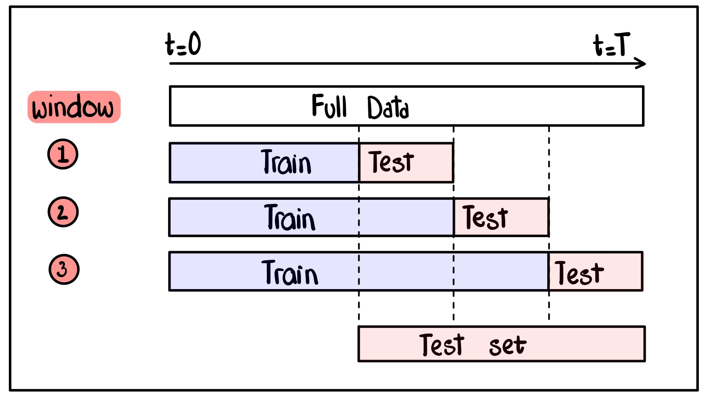
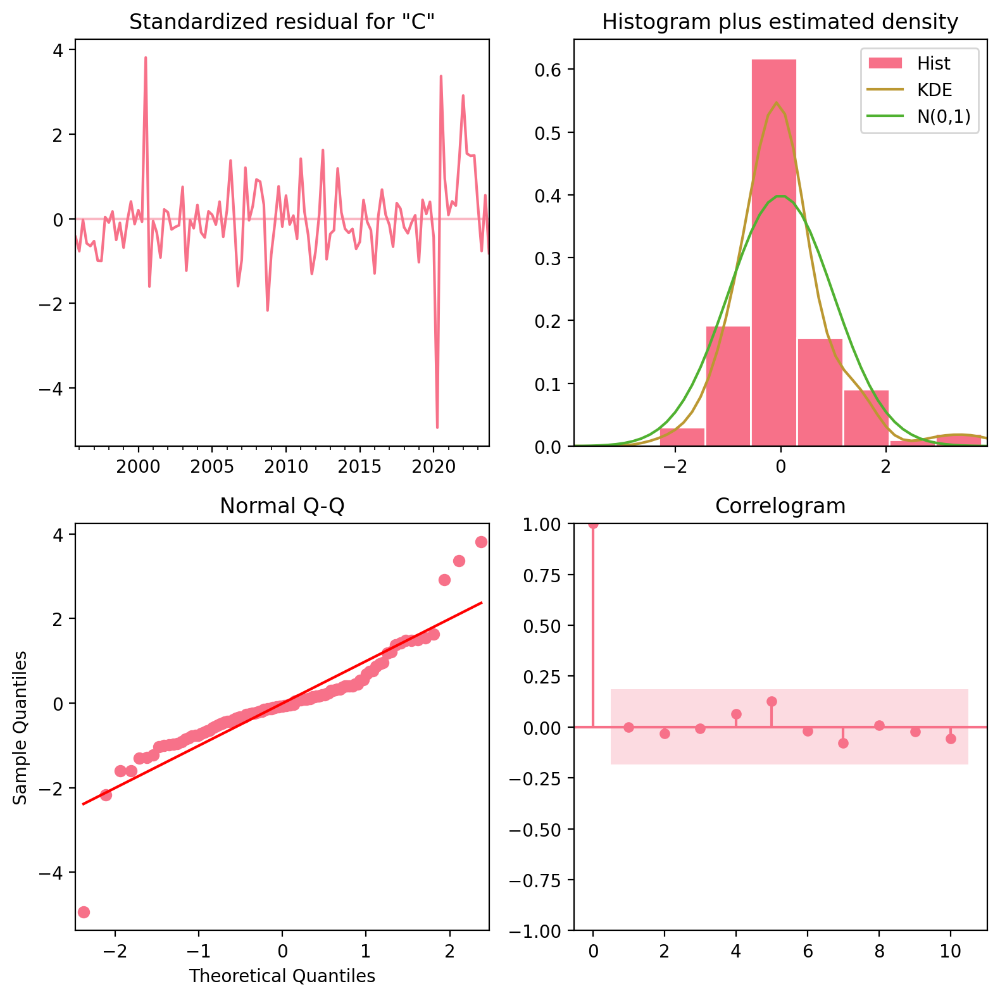
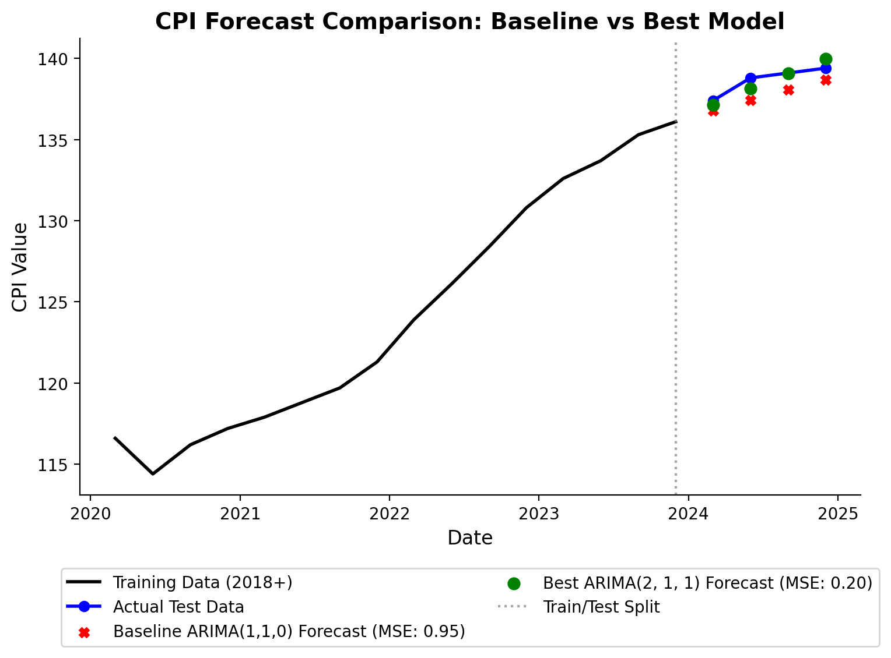

# Load the Australian CPI data
df = pd.read_csv('data.cpi.aus.csv')
print("First 5 observations:")
print(df.head())First 5 observations:
Date CPI
0 Jun-1922 2.8
1 Sep-1922 2.8
2 Dec-1922 2.7
3 Mar-1923 2.7
4 Jun-1923 2.8November 28, 2025
In this project, my aim is to forecaste the Australian CPI values for 2024 Q1-Q4 using ARIMA models. Quarterly CPI data from March 1995 to December 2023 (114 observations) serves as training data, with March-December 2024 (4 observations) held out for testing.
First, we load the Australian CPI data.
# Load the Australian CPI data
df = pd.read_csv('data.cpi.aus.csv')
print("First 5 observations:")
print(df.head())First 5 observations:
Date CPI
0 Jun-1922 2.8
1 Sep-1922 2.8
2 Dec-1922 2.7
3 Mar-1923 2.7
4 Jun-1923 2.8Since the goal of this project is to forecast the Australian CPI, we need to split the data into train and test sets.
The training set is from March 1995 to December 2023, and the test set is from March 2024 to December 2024.
# Convert Date column to datetime for proper filtering
df['Date'] = pd.to_datetime(df['Date'], format='%b-%Y')
# Split data into train and test sets
# Train: Mar-1995 to Dec-2023
# Test: Mar-2024 to Dec-2024
train_start = pd.to_datetime('1995-03-01')
train_end = pd.to_datetime('2023-12-01')
test_start = pd.to_datetime('2024-03-01')
test_end = pd.to_datetime('2024-12-01')
df = df[(df['Date'] >= train_start) & (df['Date'] <= test_end)].copy()
# Filter the data
train_df = df[(df['Date'] >= train_start) & (df['Date'] <= train_end)].copy()
test_df = df[(df['Date'] >= test_start) & (df['Date'] <= test_end)].copy()Let’s plot the original CPI data.
# Set Date as index and sort for time series analysis
df_ts = df.set_index('Date').sort_index()
# Extract CPI series
cpi_series = df_ts['CPI']
# Plot original CPI data
plt.figure(figsize=(8, 4))
# Add light red shaded region for forecast period (Mar-2024 to Dec-2024)
forecast_start = pd.to_datetime('2024-03-01')
forecast_end = pd.to_datetime('2024-12-01')
plt.axvspan(forecast_start, forecast_end, alpha=0.2, color='red', label='Forecast Period')
plt.plot(cpi_series.index, cpi_series, color='black', label='CPI')
plt.axvline(pd.to_datetime('2020-01-01'), color='red', linestyle='--', label='COVID-19 (2020)', alpha=0.8)
plt.title('Australian Consumer Price Index (CPI)')
plt.xlabel('Date')
plt.ylabel('CPI Value')
plt.legend()
plt.grid(False)
ax_current = plt.gca()
sns.despine(ax=ax_current, top=True, right=True)
plt.tight_layout()
plt.show()The plot shows the original CPI data. The light red shaded region indicates the forecast period (March 2024 to December 2024), and the red vertical line indicates the year 2020, which marks the COVID-19 pandemic.
# Create training series (exclude test data)
train_cpi = train_df.set_index('Date')['CPI']
# Note: Frequency setting removed because dates don't conform to standard quarterly pattern
# The data is quarterly (every 3 months) but dates are irregular quarter endings
# Statsmodels will infer frequency as needed, though it may show warnings
# Boxplot of training CPI values
plt.figure(figsize=(8, 4))
plt.boxplot(train_cpi.values, vert=False, patch_artist=True,
boxprops=dict(facecolor='lightblue', color='black'),
medianprops=dict(color='red', linewidth=2),
whiskerprops=dict(color='black'),
capprops=dict(color='black'))
plt.title('Distribution of Australian CPI Values (Training Data: 1995-2023)')
plt.xlabel('CPI Value')
plt.yticks([]) # Remove y-axis ticks for a horizontal boxplot
# Annotate with key statistics from training data
stats = train_cpi.describe()
plt.text(stats['min'], 1.1, f'Min: {stats["min"]:.1f}', ha='center', va='bottom', fontsize=9)
plt.text(stats['25%'], 1.1, f'Q1: {stats["25%"]:.1f}', ha='center', va='bottom', fontsize=9)
plt.text(stats['50%'], 1.1, f'Median: {stats["50%"]:.1f}', ha='center', va='bottom', fontsize=9, fontweight='bold')
plt.text(stats['75%'], 1.1, f'Q3: {stats["75%"]:.1f}', ha='center', va='bottom', fontsize=9)
plt.text(stats['max'], 1.1, f'Max: {stats["max"]:.1f}', ha='center', va='bottom', fontsize=9)
plt.grid(True, alpha=0.3)
plt.tight_layout()
plt.show()
# Perform STL decomposition on training data only
stl = STL(train_cpi, period=12)
stl_result = stl.fit()
# Plot STL decomposition
plt.figure(figsize=(8, 6))
plt.subplot(411)
plt.plot(train_cpi, label='Training CPI')
plt.title('STL Decomposition of Australian CPI (Training Data)')
plt.legend(loc='upper left')
plt.subplot(412)
plt.plot(stl_result.trend, label='Trend')
plt.title('Trend Component')
plt.legend(loc='upper left')
plt.subplot(413)
plt.plot(stl_result.seasonal, label='Seasonal')
plt.title('Seasonal Component')
plt.legend(loc='upper left')
plt.subplot(414)
plt.plot(stl_result.resid, label='Residual')
plt.title('Residual Component')
plt.legend(loc='upper left')
plt.tight_layout()
plt.show()
The plot shows the STL decomposition of the training CPI data (1995-2023). The training data is decomposed into trend, seasonal, and residual components.
Trend component: The trend component shows the long-term trend of the CPI based on training data. Visually, it is increasing over time.
Seasonal component: The seasonal component shows the seasonal pattern of the CPI based on training data only.
However, STL decomposition will always create the appearance of seasonal patterns because it’s mathematically designed to extract and redistribute variance into trend, seasonal, and residual components, forcing periodicity even when true seasonality may be weak or nonexistent in the data.
We shouldn’t blindly trust STL’s seasonal component without validation through seasonal plots, which reveal the actual underlying patterns in the raw data and help determine if the detected seasonality is genuine or an algorithmic artifact.
# Seasonal plot: each year as one line (by quarters)
seasonal_data = pd.Series(stl_result.seasonal.values, index=train_cpi.index)
years = seasonal_data.index.year.unique()
plt.figure(figsize=(8, 4))
for year in years:
year_data = seasonal_data[seasonal_data.index.year == year]
# Group by quarters and take mean for each quarter
quarterly_data = year_data.groupby(year_data.index.quarter).mean()
quarters = range(1, len(quarterly_data) + 1)
plt.plot(quarters, quarterly_data.values, label=str(year), alpha=0.7, marker='o', markersize=3)
plt.title('Quarterly Seasonal Plot of Australian CPI (Each Year as One Line)')
plt.xlabel('Quarter')
plt.ylabel('Seasonal Component')
plt.xticks([1, 2, 3, 4], ['Q1\n(Jan-Mar)', 'Q2\n(Apr-Jun)', 'Q3\n(Jul-Sep)', 'Q4\n(Oct-Dec)'])
plt.legend(bbox_to_anchor=(1.05, 1), loc='upper left', ncol=3, fontsize=8)
plt.grid(True, alpha=0.3)
plt.tight_layout()
plt.show()
From the seasonal plot, we can’t see a clear seasonal pattern. This indicates that the seasonal period is not constant. Later in the modeling process, we can set the seasonal period as zero.
The ACF and PACF are essential diagnostic tools that visualize the internal correlation structure of time series data, helping to identify the correct parameters for forecasting models like ARIMA. Specifically, the ACF helps to detect trends and Moving Average (MA) terms, while the PACF isolates direct relationships to pinpoint the correct Autoregressive (AR) order.
# ACF and PACF plots for training data
fig, (ax1, ax2) = plt.subplots(2, 1, figsize=(8, 8))
# ACF plot
plot_acf(train_cpi, lags=24, ax=ax1, alpha=0.05)
ax1.set_title('Autocorrelation Function (ACF) - Australian CPI (Training Data)')
ax1.set_xlabel('Lag (quarters)')
ax1.set_ylabel('Autocorrelation')
ax1.grid(True, alpha=0.3)
# PACF plot
plot_pacf(train_cpi, lags=16, ax=ax2, alpha=0.05, method='ywm')
ax2.set_title('Partial Autocorrelation Function (PACF) - Australian CPI (Training Data)')
ax2.set_xlabel('Lag (quarters)')
ax2.set_ylabel('Partial Autocorrelation')
ax2.grid(True, alpha=0.3)
plt.tight_layout()
plt.show()
The ACF’s slow decline shows a clear trend, confirming the data is non-stationary. Meanwhile, the PACF spikes at lag 1 and then cuts off, which points strongly to an AR(1) structure. Together, these signals tell us we need first-order differencing. Although the plots don’t show obvious seasonality.
# Apply first-order differencing
cpi_diff = train_cpi.diff().dropna()
# Plot original vs differenced series
fig, (ax1, ax2) = plt.subplots(2, 1, figsize=(8, 8))
# Original series
ax1.plot(train_cpi.index, train_cpi, color='blue', alpha=0.7)
ax1.set_title('Original CPI Series (Training Data)')
ax1.set_ylabel('CPI Value')
ax1.grid(True, alpha=0.3)
# Differenced series
ax2.plot(cpi_diff.index, cpi_diff, color='red', alpha=0.7)
ax2.set_title('First-Order Differenced CPI Series')
ax2.set_xlabel('Date')
ax2.set_ylabel('CPI Difference')
ax2.grid(True, alpha=0.3)
ax2.axhline(y=0, color='black', linestyle='--', alpha=0.5)
plt.tight_layout()
plt.show()
The top plot shows the original CPI series, while the bottom plot shows the first-order differenced series \(y_t - y_{t-1}\). The differenced series appears to be stationary with constant variance.
Since the differenced CPI series oscillates around a positive mean rather than zero, the data exhibits a deterministic trend reflecting persistent inflation. Including a ‘drift’ term in the ARIMA model explicitly captures this average growth rate, ensuring that long-term forecasts project a continued upward trajectory rather than erroneously flattening out.
Next, we plot the ACF and PACF of the differenced CPI series.
# ACF and PACF of differenced series
fig, (ax1, ax2) = plt.subplots(2, 1, figsize=(8, 8))
# ACF of differenced data
plot_acf(cpi_diff, lags=24, ax=ax1, alpha=0.05)
ax1.set_title('ACF of Differenced CPI (d=1)')
ax1.set_xlabel('Lag (quarters)')
ax1.set_ylabel('Autocorrelation')
ax1.grid(True, alpha=0.3)
# PACF of differenced data
plot_pacf(cpi_diff, lags=16, ax=ax2, alpha=0.05, method='ywm')
ax2.set_title('PACF of Differenced CPI (d=1)')
ax2.set_xlabel('Lag (quarters)')
ax2.set_ylabel('Partial Autocorrelation')
ax2.grid(True, alpha=0.3)
plt.tight_layout()
plt.show()
The Partial Autocorrelation Function (PACF) exhibits a significant spike at lag 1 followed by a sharp cutoff, while the Autocorrelation Function (ACF) displays a gradual decay. This pattern is characteristic of an Autoregressive process of order 1 (AR(1)), supporting the selection of an ARIMA(1, 1, 0) specification with a drift term to account for the positive mean observed in the differenced series.
For the Exploratory Data Analysis, I include time series visualization, STL decomposition, autocorrelation analysis, and stationarity testing through first-order differencing. ACF and PACF plots guide initial ARIMA(1,1,0) model specification.
For the Model Selection, I used an expanding window cross-validation (5 folds) to evaluate ARIMA(p,1,q) combinations where \(p\) and \(q\) ranges from 0 to 4. The best is the one that minimizes average MSE across validation folds, prioritizing predictive accuracy over information criteria.
Forecast Evaluation compares baseline ARIMA(1,1,0) and optimized models using MAE metrics, with results visualized through comparative plots showing historical data, actual values, and forecasts.
ARIMA(1,1,0) Model Summary:
SARIMAX Results
==============================================================================
Dep. Variable: CPI No. Observations: 116
Model: ARIMA(1, 1, 0) Log Likelihood -113.056
Date: Thu, 25 Dec 2025 AIC 230.112
Time: 14:35:15 BIC 235.601
Sample: 03-01-1995 HQIC 232.340
- 12-01-2023
Covariance Type: opg
==============================================================================
coef std err z P>|z| [0.025 0.975]
------------------------------------------------------------------------------
ar.L1 0.6813 0.052 13.070 0.000 0.579 0.783
sigma2 0.4160 0.031 13.488 0.000 0.356 0.476
===================================================================================
Ljung-Box (L1) (Q): 15.29 Jarque-Bera (JB): 365.35
Prob(Q): 0.00 Prob(JB): 0.00
Heteroskedasticity (H): 2.13 Skew: 0.59
Prob(H) (two-sided): 0.02 Kurtosis: 11.65
===================================================================================
Warnings:
[1] Covariance matrix calculated using the outer product of gradients (complex-step).The ARIMA(1,1,0) model was fitted to the training CPI data. The model includes:
AR(1): An autoregressive order of 1 is selected because the Partial Autocorrelation Function (PACF) exhibits a significant spike at the first lag followed by an immediate cutoff.
I(1): First-order differencing is employed to transform the non-stationary, trending original series into a stationary series with stable variance.
MA(0): A moving average order of 0 is justified by the Autocorrelation Function (ACF), which displays the gradual geometric decay characteristic of AR processes rather than a sharp drop.

The diagnostic plots show:
This is now the fun part that I normally do. We are going to find the best \((p, d, q)\) order via a walk-forward rolling window. The idea here is that we find the best order that minimizes the rolling window’s MSE. What is my motivation? - I don’t trust AIC and BIC alone. Though, AIC estimates the theoretical quality of a model (balancing fit vs. complexity), rolling window MSE measures the practical predictive power by simulating how the model would have actually performed if we had used it in the past.
Why use Rolling Window MSE instead of AIC?
Real-World Simulation: It tests the model on data it has never seen, just like in real forecasting.
Detects Structural Breaks: If a model works well in the 90s but fails in the 2000s, rolling MSE will penalize it. AIC looks at the average fit over the whole history and might miss this instability.
Avoids Overfitting: AIC can sometimes select complex models that fit “noise.” Cross-validation rarely lies—if the complex model doesn’t predict better, it won’t win.
First, we have to talk about: “What is Rolling Window?”- In a nutshell, it is a technique in time series analysis where a calculation or model uses all available historical data up to the current point in time.

The Logic:
The algorithm works by anchoring the start index at the beginning of the dataset (\(t=0\)) and iteratively moving the end index forward.
Step 0: Define a minimum training size (\(k\)) and a forecast horizon/test size (\(h\)).
Step 1: Train on the initial window \([0, k]\). Forecast \([k, k+h]\).
Step 2: “Expand” the window. Train on \([0, k+h]\). Forecast \([k+h, k+2h]\).
Step 3: Expand again. Train on \([0, k+2h]\). Forecast \([k+2h, k+3h]\).
Repeat until the test set reaches the end of the total dataset.
To account for the significant shift in CPI structure following the onset of the COVID-19 pandemic, we utilized a lower number of splits for cross-validation. Since the growth rate and volatility post-2020 differ drastically from the stable pre-2020 period, validating on earlier years could obscure the model’s ability to adapt to the current regime. Therefore, our validation strategy focuses strictly on the years 2020, 2021, 2022, and 2023 to prioritize recent predictive accuracy. See the change in rate after 2020 in Figure 1
Below, you may find the code to implement expanding window. We do:
We systematically test every parameter combination of Autoregressive (\(p\)) and Moving Average (\(q\)) orders ranging from 0 to 4, with differencing (\(d\)) fixed at 1 to handle non-stationarity.
Expanding Window Cross-Validation: We utilize an “anchored” validation strategy where the training set grows larger with each iteration (expanding window), preserving the full historical context while testing on the subsequent 4 quarters (1 year).
Drift Integration: We employ trend='t' to include a linear trend term, which mathematically translates to a constant “drift” (average inflation rate) in the differenced equation.
Selection Criterion: The optimal model is identified by minimizing the average Mean Squared Error (MSE) across all 5 validation folds, prioritizing practical predictive accuracy over theoretical fit.
# Ensure data is a Series (fixes shape issues)
if isinstance(train_cpi, pd.DataFrame):
train_cpi = train_cpi.squeeze()
# Define parameters
p_values = range(0, 5)
d_values = [1]
q_values = range(0, 5)
pdq_combinations = list(product(p_values, d_values, q_values))
best_score = float("inf")
best_cfg = None
tscv = TimeSeriesSplit(n_splits=5, test_size=4)
print(f"Starting Grid Search on {len(train_cpi)} data points...\n")
for param in pdq_combinations:
mse_scores = []
print(f"Testing ARIMA{param}...", end=" ")
for train_index, test_index in tscv.split(train_cpi):
train_fold = train_cpi.iloc[train_index]
test_fold = train_cpi.iloc[test_index]
try:
# --- THE FIX IS HERE ---
# Use trend='t' when d=1 to add a "Drift" term
model = ARIMA(train_fold, order=param, trend='t', enforce_stationarity=False)
model_fit = model.fit()
forecast = model_fit.forecast(steps=len(test_fold))
mse = mean_squared_error(test_fold, forecast)
mse_scores.append(mse)
except Exception as e:
continue
if len(mse_scores) > 0:
avg_mse = np.mean(mse_scores)
print(f"-> Avg MSE: {avg_mse:.4f}")
if avg_mse < best_score:
best_score = avg_mse
best_cfg = param
else:
print("-> Failed to converge.")
print("-" * 40)
print(f"Best Model: ARIMA{best_cfg} with Rolling MSE: {best_score:.4f}")Starting Grid Search on 116 data points...
Testing ARIMA(0, 1, 0)... -> Avg MSE: 7.0201
Testing ARIMA(0, 1, 1)... -> Avg MSE: 6.7206
Testing ARIMA(0, 1, 2)... -> Avg MSE: 6.5812
Testing ARIMA(0, 1, 3)... -> Avg MSE: 6.4779
Testing ARIMA(0, 1, 4)... -> Avg MSE: 6.2234
Testing ARIMA(1, 1, 0)... -> Avg MSE: 6.4275
Testing ARIMA(1, 1, 1)... -> Avg MSE: 6.0812
Testing ARIMA(1, 1, 2)... -> Avg MSE: 6.4024
Testing ARIMA(1, 1, 3)... -> Avg MSE: 6.3380
Testing ARIMA(1, 1, 4)... -> Avg MSE: 6.8053
Testing ARIMA(2, 1, 0)... -> Avg MSE: 6.2800
Testing ARIMA(2, 1, 1)... -> Avg MSE: 5.7589
Testing ARIMA(2, 1, 2)... -> Avg MSE: 6.7963
Testing ARIMA(2, 1, 3)... -> Avg MSE: 7.0020
Testing ARIMA(2, 1, 4)... -> Avg MSE: 7.2795
Testing ARIMA(3, 1, 0)... -> Avg MSE: 6.1979
Testing ARIMA(3, 1, 1)... -> Avg MSE: 6.3408
Testing ARIMA(3, 1, 2)... -> Avg MSE: 6.8001
Testing ARIMA(3, 1, 3)... -> Avg MSE: 7.3985
Testing ARIMA(3, 1, 4)... -> Avg MSE: 7.2995
Testing ARIMA(4, 1, 0)... -> Avg MSE: 6.0851
Testing ARIMA(4, 1, 1)... -> Avg MSE: 5.7986
Testing ARIMA(4, 1, 2)... -> Avg MSE: 5.9326
Testing ARIMA(4, 1, 3)... -> Avg MSE: 6.6206
Testing ARIMA(4, 1, 4)... -> Avg MSE: 6.8201
----------------------------------------
Best Model: ARIMA(2, 1, 1) with Rolling MSE: 5.7589Now, let’s examine the diagnostic plots for our best model ARIMA(2,1,1) to assess its adequacy.

The diagnostic plots for the best ARIMA(2,1,1) model show:
Residual Independence: The Correlogram shows no significant autocorrelation, as the lags remain well within the significance bounds. This confirms that the residuals are uncorrelated (white noise), indicating the model has successfully captured the temporal structure of the series.
Deviations from Normality: The Normal Q-Q plot and Histogram exhibit distinct “heavy tails,” evidenced by significant deviations from the red reference line at the extremes. This suggests that while the model fits the central data well, it struggles to capture extreme outliers, likely resulting from the exogenous economic shocks observed around 2020.
Now, we wonder how does this best model ARIMA(2,1,1)compare to the baseline model ARIMA(1,1,0). The baseline model yields an average MSE of 6.4275 while the best grid-search is 5.5281. Which in my view is much better, now I can justify that- “Hey, my model choice is based on unseen data which is a solid justification for choosing the best model for predictive purposes.”
Now let’s compare the forecasting performance of both models by generating predictions for the next 4 quarters (March 2024 - December 2024) and plotting them against the actual values.
# Extract test CPI series
test_cpi = test_df.set_index('Date')['CPI']
# Fit both models on the training data
baseline_model = ARIMA(train_cpi, order=(1,1,0), trend='t', enforce_stationarity=False)
baseline_fit = baseline_model.fit()
best_model = ARIMA(train_cpi, order=best_cfg, trend='t', enforce_stationarity=False)
best_fit = best_model.fit()
# Generate forecasts for the test period (4 quarters)
n_periods = len(test_cpi)
baseline_forecast = baseline_fit.forecast(steps=n_periods)
best_forecast = best_fit.forecast(steps=n_periods)
# Calculate forecast errors
baseline_mse = mean_squared_error(test_cpi, baseline_forecast)
best_mse = mean_squared_error(test_cpi, best_forecast)
# Plot the results
plt.figure(figsize=(8, 6))
# Filter training data to show only from 2018 onwards for clearer visualization
train_cpi_filtered = train_cpi[train_cpi.index >= '2020-01-01']
# Plot historical data (2018 onwards)
plt.plot(train_cpi_filtered.index, train_cpi_filtered, color='black', label='Training Data (2018+)', linewidth=2)
# Plot actual test data
plt.plot(test_cpi.index, test_cpi, color='blue', label='Actual Test Data', linewidth=2, marker='o')
# Plot forecasts as points instead of lines
plt.scatter(test_cpi.index, baseline_forecast, color='red', marker='x', s=25, linewidth=3, label=f'Baseline ARIMA(1,1,0) Forecast (MSE: {baseline_mse:.2f})', zorder=5)
plt.scatter(test_cpi.index, best_forecast, color='green', marker='o', s=25, linewidth=3, label=f'Best ARIMA{best_cfg} Forecast (MSE: {best_mse:.2f})', zorder=5)
# Add vertical line to separate train/test
plt.axvline(x=train_cpi.index[-1], color='gray', linestyle=':', alpha=0.7, label='Train/Test Split')
# Formatting
plt.title('CPI Forecast Comparison: Baseline vs Best Model', fontsize=14, fontweight='bold')
plt.xlabel('Date', fontsize=12)
plt.ylabel('CPI Value', fontsize=12)
plt.legend(loc='lower center', bbox_to_anchor=(0.5, -0.35), ncol=2)
plt.grid(False)
ax_current = plt.gca()
sns.despine(ax=ax_current, top=True, right=True)
plt.tight_layout()
plt.show()
The forecast comparison plot shows:
The plot clearly demonstrates how the best model provides more accurate predictions compared to the baseline, particularly in capturing the recent trends in CPI data.
# Create a summary table of forecast results
forecast_dates = test_cpi.index.strftime('%Y-%m-%d')
quarters = ['Q1', 'Q2', 'Q3', 'Q4']
forecast_comparison_df = pd.DataFrame({
'Actual CPI': test_cpi.values,
'Baseline Forecast': baseline_forecast,
'Best Model Forecast': best_forecast,
'Baseline Error': np.abs(test_cpi.values - baseline_forecast),
'Best Model Error': np.abs(test_cpi.values - best_forecast)
})
# Display the forecast comparison table
forecast_comparison_df.round(2)| Actual CPI | Baseline Forecast | Best Model Forecast | Baseline Error | Best Model Error | |
|---|---|---|---|---|---|
| 2024-03-01 | 137.4 | 136.79 | 137.15 | 0.61 | 0.25 |
| 2024-06-01 | 138.8 | 137.44 | 138.14 | 1.36 | 0.66 |
| 2024-09-01 | 139.1 | 138.07 | 139.07 | 1.03 | 0.03 |
| 2024-12-01 | 139.4 | 138.70 | 139.96 | 0.70 | 0.56 |
After all, it is clear that the exhaustive-search approach performs better in terms of predictive accuracy. In this project, I want to demonstrate that using the ACF and the PACF plots to indentify the MA and AR terms is really good as a bench mark, however, the exhaustive search ensures that we have explored all the possible models and by choosing the best \((p,d,q)\) order that minimizes the MSE, we can arrive as a model that predicts CPI well.
The most significant challenge in this project was implementing the exhaustive search Cross-Validation for the time series data. To manage the complexity, I stepped back and adopted a modular approach:
Index Verification: First, I debugged the rolling window to ensure the correct training and testing indices were used at every iteration.
Parameter Grid: Next, I verified that the \((p,d,q)\) combinations were generating correctly.
Model Integration: Finally, I integrated the ARIMA fitting process into the loop.
The rigorous testing paid off, and seeing the code work successfully was incredibly satisfying. I have developed a strong appreciation for this exhaustive search methodology. While computational limits exist today, I look forward to the day quantum computing makes it possible to explore even vaster parameter spaces for my future projects.